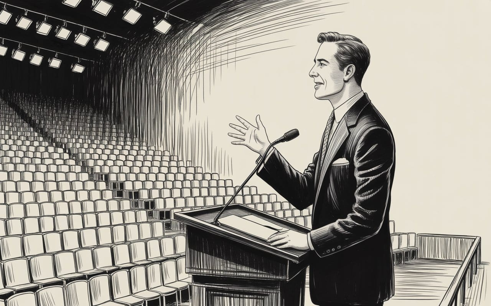

The Room Was Already Set Before You Walked In
You have spent your whole life learning to spot the argument. Nobody told you the argument was never the point. The persuasion is the last nail. Pre-suasion is the house. And someone else already built it.


"It is not the voice that commands the story; it is the first image."
— Italo Calvino

How the Architecture of Attention Replaced the Art of Persuasion
Before the argument opens its mouth, the room has already decided how it will be received…
You have spent your whole life learning to spot the argument. Nobody told you the argument was never the point.
Persuasion is the last ten seconds of an influence operation that began hours, days, or months earlier. It is the closing argument delivered to a jury that was selected, sequestered, and quietly marinated before the trial started. By the time the argument arrives, the hard work is already done. What did the hard work is called pre-suasion, and unlike persuasion, it has no critics, no regulators, no curricula, and no reputation problem at all — because most people have never consciously encountered it.
That is not a coincidence. Invisibility is its primary operating condition.
Pre-suasion is the preparation of the psychological state that persuasion lands in. It does not make an argument. It does not need one. It simply arranges the attentional furniture of the mind before any specific message arrives, so that when the message comes, it is not entering a neutral space — it is completing a room that was already built for it.
The persuasion is the last nail. Pre-suasion is the house.
Robert Cialdini documented this at the scale of human interactions in his 2016 book of the same name — how a realtor who mentions the word "warm" before showing a property gets higher offers, how a charity that asks donors to describe themselves as "adventurous" before making a pitch doubles its conversion rate.
These are not tricks. They are demonstrations of a mechanism: the associative network that is active in a person's mind at the moment of decision determines how incoming information is evaluated. Prime the network, and you do not need to change the argument. The argument lands differently because the receiver is different.
What Cialdini documented, though, was retail pre-suasion. Individual, conscious, applied by a person who knows what they are doing to another person who does not.
What has happened since is that this mechanism has been discovered, mapped with extraordinary precision, and industrialized into infrastructure that operates continuously, automatically, and at civilizational scale — not to make any individual persuasive message more effective, though it does that too, but to maintain an entire population in a state of pre-persuaded receptivity as a baseline condition of their daily cognitive life.
That is the digital platform business model, stated plainly. It is not a byproduct of the platform. It is the product. Advertisers are not buying the message delivery. They are buying access to a psychological state that the platform has manufactured in advance. The persuasion is the cherry. The pre-suasion is the orchard, the growing season, the weather system — everything that produced the condition in which the cherry could exist.
Consider what actually happens before persuasion reaches you on a given morning. You have not yet decided what to think about. The prefrontal cortex is not fully online. You are in the neurological DMZ between sleep and deliberation. And in that window, before a single conscious choice has been made, the device is already loading a state.
A notification punctuates the quiet with something that is framed as relevant to you personally. The feed begins moving — pre-selected, calibrated, paced at a tempo that keeps the attentional system engaged without ever satisfying it.
Something provokes mild outrage. Something produces warmth.
Something creates a flicker of envy or longing. Something funny. Something alarming.
Then the persuasion arrives — the advertisement, the sponsored post, the content that was purchased — and it does not land in a skeptical, rested, evaluatively equipped mind. It lands in a mind that has been spending the last twenty minutes being emotionally activated, associatively primed, and deliberately fatigued. The persuasion barely has to try. The pre-suasion already ran the four previous laps.
This is the thing that makes modern advertising genuinely different from its prior iterations and genuinely underexamined for what it is. A television commercial reached you consciously, from outside, as a thing you recognized as a persuasion attempt and could resist accordingly. Researchers since the 1980s have documented the backfire effect, the psychological reactance that fires when people detect persuasion intent — we resist what we recognize as an attempt to move us. The pre-suasion architecture is specifically designed to circumvent this. The persuasion arrives not as a detectable intrusion into your attention but as the natural next thing in a stream that was pre-configured to make it feel natural. Your reactance does not fire because there is nothing to react against.
The frame was already in the wall before you moved in.
B.J. Fogg mapped the behavioral infrastructure of this at Stanford's Persuasive Technology Lab — which he founded in 1998, a detail worth sitting with. His students graduated and went directly to Facebook, Google, Twitter, and Instagram. The mechanisms were not discovered later and applied carelessly.
They were designed in from the beginning, by people who understood exactly what psychological levers the architecture was pulling and pulled them anyway because the engagement metrics rewarded it.
Variable reward scheduling. Infinite scroll. Notification cadence tuned to maximize return visits rather than to inform. These are not design oversights. They are Skinnerian conditioning translated into interface decisions, optimizing continuously for a population kept in the pre-persuaded state as a baseline.
Here is where persuasion and pre-suasion need to be held together to understand what has actually changed.
Persuasion, at its functional best, is a legitimate epistemic mechanism. Arguments get made. Evidence gets marshaled. A person who is capable of deliberation receives the argument, evaluates it against their existing beliefs, and updates or does not update accordingly. Persuasion can be dishonest — it can cherry-pick evidence, exploit cognitive biases, appeal to emotion at the expense of reason. We have always known this, and we have always built defenses against it: rhetoric education, critical thinking curricula, journalism standards, defamation law, the entire infrastructure of discourse in a literate society designed to give people the tools to receive persuasive content without being flattened by it.
These defenses are predicated on a specific model of the receiver. A person who has cognitive resources available for evaluation. A person who can notice when they are being appealed to and mount a response. A person whose attentional state is not being continuously managed by an external system designed to keep them in a condition of maximal receptivity. Pre-suasion at scale does not defeat persuasion's defenses directly.
It dismantles the preconditions that the defenses require to operate. It is not winning the argument. It is ensuring that, by the time the argument starts, the other person is in no condition to have one.
This is why the standard response — teach people to recognize persuasion, teach media literacy, build better critical thinking — is necessary and insufficient at the same time. It is correct that people should be able to identify persuasion attempts. It is also true that they will be doing so with cognitive machinery that has been systematically depleted by the environment in which the persuasion is delivered.
You cannot out-deliberate an infrastructure designed to prevent deliberation.
You cannot critical-think your way out of an attentional state that was installed before you had access to your thinking. The tools of persuasion defense are downstream of attention. Pre-suasion operates upstream of it.
The political implications of this are not complicated, they are just professionally inconvenient to state. Democratic governance requires a citizen who can receive competing claims, hold them in working memory, and evaluate them against considered values before acting.
This is not a utopian fantasy of the perfectly rational voter. It is a minimum threshold — a floor, not a ceiling. What the pre-suasion infrastructure does is not make that floor unreachable. It lowers the floor continuously, without asking, by colonizing the cognitive conditions that the floor depends on.
The persuasion in a political advertisement is almost irrelevant to its effect. What matters is the attentional and emotional state of the viewer when it arrives — whether they are frightened or calm, whether they are in an associative network of threat or one of aspiration, whether they have been primed in the preceding forty minutes with content that makes the ad's frame feel like common sense. Campaigns understand this increasingly well. The micro-targeting literature is not about delivering more accurate persuasion. It is about delivering persuasion into precisely configured pre-suasive states, matched by psychographic segment, time of day, and emotional valence of preceding content.
The persuasion is the finishing move. The platform is the setup, and the campaign is renting it.
What this means, functionally, is that the most consequential political communications infrastructure in human history is owned by private companies, optimized for engagement revenue, and structured in a way that systematically advantages persuasion delivered into pre-configured emotional states over persuasion delivered to people with their critical faculties intact.
The argument that follows from this is not that platforms should be broken up, though perhaps they should. The argument is that any serious account of how political persuasion works in the contemporary environment that does not begin with the pre-suasion infrastructure surrounding it is describing the closing argument while ignoring the trial.
None of this is to say persuasion no longer matters. It does. Honest, rigorously argued persuasion remains the most legitimate tool available for changing minds that are in a position to be changed through reasoning.
The problem is that fewer and fewer minds are in that position for longer and longer periods of each day. Pre-suasion does not replace persuasion. It bends the playing field so steeply that persuasion, to compete, is increasingly forced to operate on pre-suasive terms — to be emotional, associative, fast, and designed for a distracted mind rather than a deliberating one. The bad-faith persuasion that has always existed is now being selected for by an environment in which good-faith persuasion, which requires a different kind of receiver, is becoming ecologically unsustainable.
The floor is not gone. The floor is lower. And every year the infrastructure optimizes further, it drops a little more, and we keep debating the quality of the arguments being made in a room whose air has been quietly removed, and we call it a discourse problem.
It is not a discourse problem. It is a pre-suasion problem. And the persuasion we keep arguing about is the last ten seconds of something that started long before the argument opened its mouth.
Key sources informing this essay:
Cialdini, R. B. (2016). Pre-Suasion: A Revolutionary Way to Influence and Persuade. Simon & Schuster.
Fogg, B. J. (2003). Persuasive Technology: Using Computers to Change What We Think and Do. Morgan Kaufmann.
Kahneman, D. (2011). Thinking, Fast and Slow. Farrar, Straus and Giroux.
Don't miss the weekly roundup of articles and videos from the week in the form of these Pearls of Wisdom. Click to listen in and learn about tomorrow, today.


Sign up now to read the post and get access to the full library of posts for subscribers only.
 🌶️ iamkhayyam
🌶️ iamkhayyamAbout the Author
Khayyam Wakil is a researcher and his work examines the cognitive infrastructure of technological systems and the institutional conditions under which human agency either survives or is quietly consumed by the environments it builds. With the exception of here, he does not maintain a social media presence, which he acknowledges is a privilege not everyone can afford. And a point he finds genuinely uncomfortable.
On November 22nd, 2025, he became a mathematician.
He is the founder of CacheCow Agriculture Inc. and The ARC Institute of Knowware, where the geometry hiding in numbers is being turned into things that matter.
Token Wisdom is where he writes while the work is still warm.
Subscribe at https://ghost-production-198e.up.railway.app
#leadership #longread | 🧠⚡ | #tokenwisdom #thelessyouknow 🌈✨